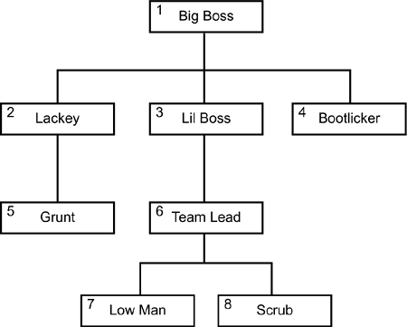

|
|
< Day Day Up > |
|
Common Table Expressions and RecursionCTEs can be used to decrease the number of views that are created. By using a CTE instead of a view, you can reduce the number of DB2 objects needed and perhaps clarify the purpose and intent of SQL statements. The SQL of the CTE is coded directly into the SQL statement. Of course, I do not mean to imply that CTEs always should be used instead of views, because CTEs make your SQL more complex and do not mask this complexity from end users the way that views can. Nested table expressions, sometimes referred to as inline views, can be rewritten as CTEs. The CTE is written into your SQL using the WITH clause, as shown in this example: WITH AVSAL (DEPT, AVG_SAL) AS (SELECT WORKDEPT, AVG(SALARY) FROM DSN8810.EMP GROUP BY WORKDEPT) SELECT DEPT, MAX(AVG_SAL) FROM AVSAL; The WITH statement defines the "table" from which the data in the SELECT statement is retrieved. More than one table can be specified in the CTE, but cyclic references are not legal. If more than one common table expression is specified, later ones can refer to the output from prior ones only. CAUTION Be careful when coding CTE names. A common table expression with the same name as a real table will replace the real table for that particular query. The table names used for CTEs must follow the standard DB2 table naming standards. Also, keep in mind that each temporary table name must be unique within a query. A CTE can be easier to use than a regular table expression because it is defined once and then can be used multiple times throughout the query. However, if a nested table expression is needed more than once in the same query, it must be completely written into the query again. Using CTEs for Recursion
Figure 2.3. A sample hierarchy. A DB2 table holding this data could be set up as follows: CREATE TABLE ORG_CHART (MGR_ID SMALLINT, EMP_NAME CHAR(20)) ; Of course, this is a simple implementation and many more columns would likely be needed. But the simplicity of this table will suit our purposes for learning recursion. To make the data in this table match Figure 2.3, we would load the table as follows:
The MGR_ID for the top-most node is set to some value indicating that there is no parent for this row; in this case, –1 is used. Now that we have loaded the data, we can code a query to walk the hierarchy using recursive SQL. Suppose we need to report on the entire organizational structure under LIL BOSS. The following recursive SQL using a CTE will do the trick: WITH EXPL (MGR_ID, EMP_ID, EMP_NAME) AS ( SELECT ROOT.MGR_ID, ROOT.EMP_ID, ROOT.EMP_NAME FROM ORG_CHART ROOT WHERE ROOT.MGR_ID = 3 UNION ALL SELECT CHILD.MGR_ID, CHILD.EMP_ID, CHILD.EMP_NAME FROM EXPL PARENT, ORG_CHART CHILD WHERE PARENT.EMP_ID = CHILD.MGR_ID ) SELECT DISTINCT MGR_ID, EMP_ID, EMP_NAME FROM EXPL ORDER BY MGR_ID, EMP_ID; The results of running this query would be:
Let's break this somewhat complex query down into its constituent pieces to help understand what is going on. First of all, a recursive query is implemented using the WITH clause (using a CTE). The CTE is named EXPL. The first SELECT primes the pump to initialize the "root" of the search. In our case, it starts with EMP_ID 3—LIL BOSS. Now comes the tricky part. The next SELECT is an inner join combining the CTE with the table upon which the CTE is based. This is where the recursion comes in. A portion of the CTE definition refers to itself. Finally, we SELECT from the CTE. Similar queries can be written to completely explode the hierarchy to retrieve all the descendants of any given node. Use Recursion When NecessaryRecursion is a very powerful feature of DB2 SQL—and recursive SQL can be very elegant and efficient. However, because of the difficulty developers can have understanding recursion, recursive SQL is sometimes thought of as "too inefficient to use frequently." But, if you have a business need to walk or explode hierarchies in DB2, recursive SQL is likely to be your most efficient option. Think about it: What else are you going to do? You can create pre-exploded tables (refer to Chapter 5 for more on this tactic), but this requires denormalization and a lot of pre-processing, which can be quite inefficient. Or, perhaps you might decide to write your own code to walk a hierarchy. This, too, is fraught with potential problems. You will likely retrieve more data than you need, causing inefficient I/O. Also, how will you assure more efficient access in your code than DB2? If every row processed by the query is required in the answer set ("find all employees who work for LIL BOSS"), then recursion will most likely be quite efficient. If only a few of the rows processed by the query are actually needed ("find all flights from Houston to Pittsburgh, but show only the three fastest"), then a recursive query can be quite costly. The bottom line is that you should consider coding recursive SQL when business requirements call for such processing. Be sure that suitable indexes are available and examine your access paths. Specify Column Names in the CTEYou must specify column names for the CTE if the expression is recursive (or if the query returns duplicate column names). Column names are specified in parentheses immediately following the CTE name. For example: WITH CTE_NAME (COL1, COL2). . . In this example the CTE is named CTE_NAME and the columns for the CTE are COL1 and COL2. Avoid Cyclic CTE ReferencesIf more than one CTE is defined in the same statement, cyclic references between the common table expressions are not permitted. A cyclic reference occurs when two CTEs refer to each other. For example, consider two CTEs named CTE_A and CTE_B. If CTE_A refers to CTE_B and CTE_B also refers to CTE_A, then an error will be returned by DB2. Use UNION ALL, not UNION for RecursionWhen coding a recursive SQL query, you must use a UNION ALL between the two main parts of the statement. UNION ALL is required because it allows duplicates, whereas UNION does not. Duplicate output rows are needed for recursive processing. Know How to Halt RecursionWhenever you are writing recursive code, you must be aware of the potential for an infinite loop. Infinite loops can occur because of improper coding or because of the structure of the data being accessed. The trick to preventing an infinite loop is to code a level into your CTE for recursion. For example, consider our previous example and the following query:
WITH EXPL (MGR_ID, EMP_ID, LVL, EMP_NAME) AS
(
SELECT ROOT.MGR_ID, ROOT.EMP_ID, 0, ROOT.EMP_NAME
FROM ORG_CHART ROOT
WHERE ROOT.MGR_ID = 3
UNION ALL
SELECT CHILD.MGR_ID, CHILD.EMP_ID, PARENT.LVL+1 CHILD.EMP_NAME
FROM EXPL PARENT, ORG_CHART CHILD
WHERE PARENT.EMP_ID = CHILD.MGR_ID
AND PARENT.LVL+1 < 3
)
SELECT DISTINCT MGR_ID, EMP_ID, LVL, EMP_NAME
FROM EXPL
ORDER BY MGR_ID, EMP_ID;
In this case we have coded the LVL column to count the levels of the organizational hierarchy. The bold predicate in the second SELECT statement will halt processing at 3 levels. Of course, you can make this however many levels you desire. Keep in mind, though, that given our data we know that an infinite loop will not occur if the recursive SQL is written properly. However, if a lower-level row can be the parent of a higher-level row, then we can introduce an infinite loop. This is unlikely to occur in an organizational hierarchy, but could occur in other types of networks that need to be traversed using recursive SQL. Know Your DataIt is very important to know your data when you are coding recursive SQL. Things to know about your data include:
Only with in-depth knowledge of your data will you be able to write efficient and effective recursive SQL statements. |
|
|
< Day Day Up > |
|